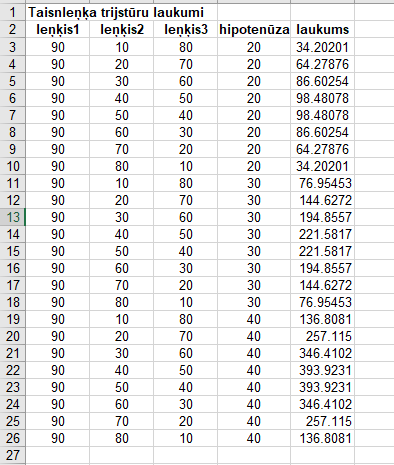
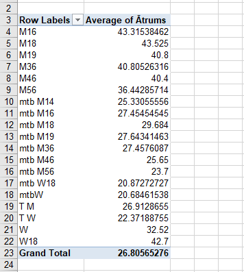
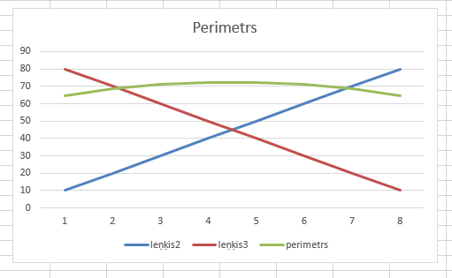
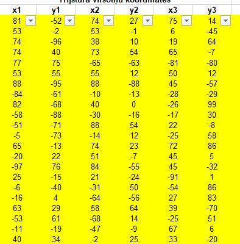

Mēs apguvām MS Excel izmantošanu, funkcijas un datu apstrādi pēc vairākiem kritērijiem. Uzzinājām, kā iesaldēt rindas un kolonnas.
Excel apguvām datu apsterādi. Iemācījos, kā filtrēt tabulas.



